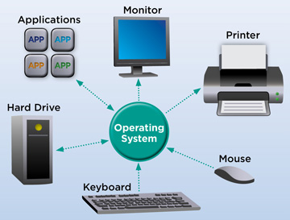

Een besturingssysteem, ook wel OS genoemd, vormt de essentiële software waarmee we kunnen
communiceren met onze computers en smartphones, en ze effectief kunnen gebruiken. Met behulp van
deze krachtige tool kun je gemakkelijk schakelen tussen applicaties, genieten van films, documenten
opstellen en nog veel meer taken moeiteloos uitvoeren. Het besturingssysteem dat je gebruikt heeft
een aanzienlijke invloed op de prestaties van je computer. Er zijn diverse besturingssystemen waar
je uit kunt selecteren, elk met een unieke uitstraling.
Het besturingssysteem speelt een rol als tussenpersoon tussen de gebruiker en de hardware van de computer. Het zorgt voor de communicatie tussen de diverse onderdelen van de computer, zoals de CPU, het geheugen, de opslagapparaten, de invoer- en uitvoerapparaten, en andere elementen, om ervoor te zorgen dat ze allemaal harmonieus samenwerken om taken van applicaties uit te voeren.
Zonder een besturingssysteem zouden onze communicatie met computers niet op een zinvolle wijze kunnen plaatsvinden. Het besturingssysteem biedt ons de mogelijkheid om programma's te draaien, bestanden op te slaan, netwerken te verbinden en diverse andere taken uit te voeren die voor ons vanzelfsprekend zijn.
